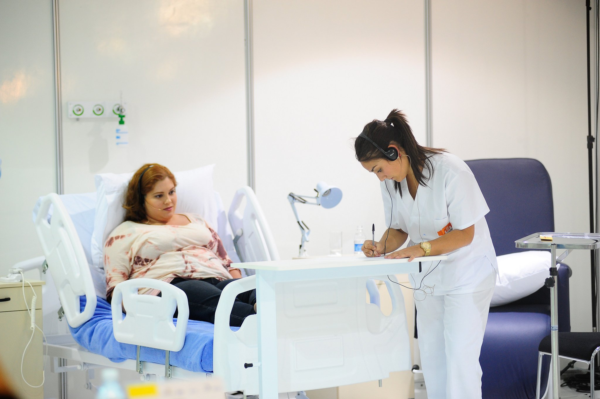

LUCÍA LUNA
CIPFP CANASTELL
¿Quieres saber más?
Ponte en contacto con la coordinadora Lucía Luna, técnica de skills Atención sociosanitaria
lgonzalez@fpmislata.com
LUCÍA LUNA
CIPFP CANASTELL
¿Quieres saber más?
Ponte en contacto con la coordinadora Lucía Luna, técnica de skills Atención sociosanitaria
lgonzalez@fpmislata.comIncluye los cuidados y vigilancia del estado de un enfermo: cuidado de las condiciones sanitarias del entorno del paciente, colaboración en la prestación de cuidados psíquicos al paciente y tareas de instrumentación en equipos de salud bucodental, entre otras.
Además, desarrolla las actividades asistenciales, no sanitarias, de las personas dependientes desde un punto de vista integral.
Ciclos formativos relacionados
Aplicaciones
Las aplicaciones de estas skill se realizan en dos sectores muy importantes: sanitario y de servicios.
En el sector sanitario, desarrollando las funciones de auxiliar de clínica y constituye la formación requerida para trabajar en el sector, tanto público como privado.
En el sector servicios, desarrollando todas las funciones de auxiliar en el área de servicios personales de atención a la dependencia, tanto público como privado.
LUCÍA LUNA
CIPFP CANASTELL
¿Quieres saber más?
Ponte en contacto con la coordinadora Lucía Luna, técnica de skills Atención sociosanitaria
lgonzalez@fpmislata.com